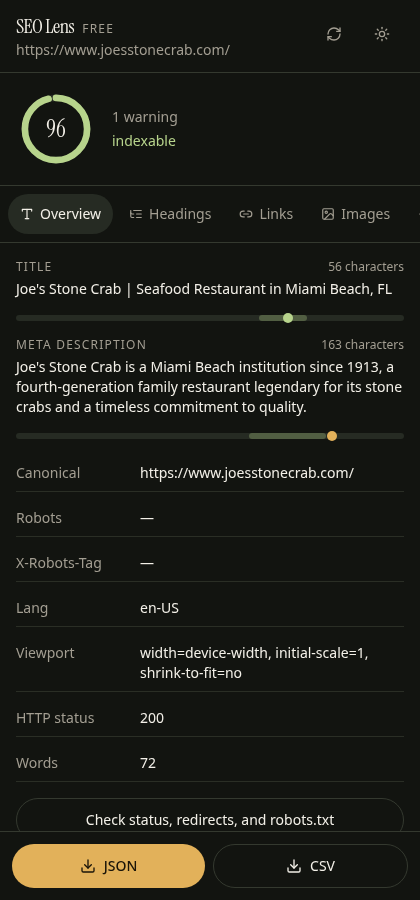
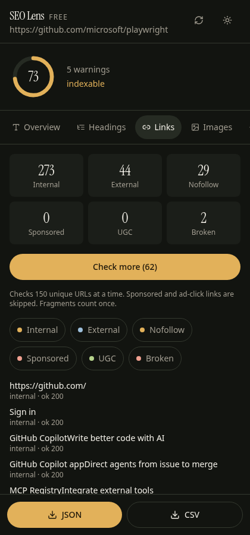
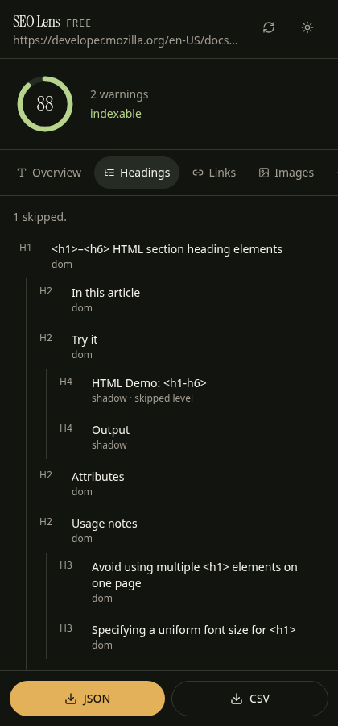

The free, no-login alternative to MozBar for on-page SEO
SEO Lens audits any page from Chrome's side panel: headings, broken links, schema, hreflang, redirects, robots.txt and more. There's no account, no tracking, and nothing runs until you click.
Free for everything on this page. No signup. Works on any http(s) page.

Three reasons people switch
1. Nothing runs until you click
MozBar 5.0.17 loads a 332 KB toolbar script on every http(s) page you visit, plus another 284 KB on search engines. SEO Lens loads 0 KB until you open the panel, and then only on that tab.
SEO Lens needs site access to read the page you audit, runs nothing until you click, and sends no data.
2. Checks MozBar doesn't have
- Broken-link checker: 150 links per batch, with "blocked" (401/403/429/999) kept separate from "broken"
- robots.txt evaluation: does it actually block this URL?
- hreflang validation: missing x-default and return links
- Sitemap status, including sitemaps listed in robots.txt
- Real HTTP status codes and the redirect chain hop by hop
3. More accurate on modern pages
- Schema types on a local restaurant site: 7 (nested JSON-LD) vs 3
- Schema on a GitHub repo (microdata): 1 real + 1 flagged vs 0
- Images inside shadow DOM (MDN): 3 vs 0
- Wikipedia internal links: 328 (excludes # links) vs 504 (includes 174 hash links)
From our own tests on 2026-10-21 (SEO Lens 1.0.0 vs MozBar 5.0.17, logged out).
Everything you get, free
- Score and issues: a 0–100 on-page score from 21 rules, plus a toolbar badge
- Basics: title and description meters, canonical, meta robots, X-Robots-Tag, lang, viewport, visible word count, HTTP status
- Headings: a nested H1–H6 tree covering shadow DOM, same-origin iframes and role="heading". Flags skipped levels and missing or multiple H1s, keeps hidden headings out of the score, and scrolls to any heading you click.
- Links: internal, external, nofollow, sponsored and UGC, with on-page highlighting and the full list
- Images: missing vs empty alt, dimensions, file sizes
- Structured data: JSON-LD and microdata, with invalid JSON and unknown types flagged
- Social: rendered Open Graph and Twitter card previews
- Export: CSV or JSON for every report


Private by design
No account, no analytics
No login, no tracking SDK, no remote logging, and no SEO Lens server.
Site access, used narrowly
SEO Lens needs site access to read the page you audit, runs nothing until you click, and sends no data. The audit runs in your browser; nothing is uploaded.
Checks go straight to the site
Network checks (broken links, file sizes, status, redirects, robots.txt, sitemap) run only when you start them and go directly to the site you're checking. MozBar, by comparison, reads moz.com auth cookies; SEO Lens uses none.
Where MozBar is still better (honestly)
We'd rather tell you up front:
- Domain Authority, Page Authority, Spam Score and backlinks. That's Moz's link index, and SEO Lens has no equivalent. (Moz's free Community account gives DA/PA with a 1,000-query monthly limit.)
- Keyword data: ranking keywords, difficulty, and keyword-specific on-page grading (Moz Pro).
- SERP overlay on Google, Bing, DuckDuckGo and Yahoo with metrics and CSV export (Pro). SEO Lens's SERP tools are Google-only and still being verified.
- Domain Overview, a persistent dockable toolbar, a site block list and caching.
- A raw JSON-LD viewer and an explicit HTTPS row.
- A long track record. MozBar has over 1 million users. SEO Lens is new.
If DA and backlinks drive your work, keep MozBar or Moz Pro. For on-page audits, SEO Lens is free and private, and it runs only when you ask. Many people will reasonably use both.
Side-by-side summary
Swipe the table sideways to see all columns.
| SEO Lens | MozBar free (logged out) | MozBar with Moz Pro | |
|---|---|---|---|
| Price | Free | Free (limited) | Moz Pro from $49/mo (entry); Standard $99/mo or $79/mo yearly |
| Login | Never | No (on-page sections) | Moz account + subscription |
| Broken-link checker | ✓ | ✗ | ✗ |
| robots.txt "blocks this URL?" | ✓ | link only | link only |
| hreflang x-default + return links | ✓ | ✗ | ✗ |
| Microdata + schema warnings | ✓ | ✗ | ✗ |
| Shadow DOM headings/images | ✓ | ✗ | ✗ |
| On-page score + issue list | ✓ (21 rules) | ✗ | keyword-specific grader |
| CSV/JSON export | ✓ every page | ✗ | CSV for SERP/page metrics |
| JS loaded on every page | 0 KB until you click | 332 KB | 332 KB |
| DA / PA / backlinks | ✗ | ✗ | ✓ |
| Keyword volume / difficulty | ✗ | ✗ | ✓ |
| SERP overlay engines | Google (unverified live) | 4 engines, no metrics logged out | 4 engines with metrics |
Gold marks the stronger option in each row. Based on SEO Lens 1.0.0 and MozBar 5.0.17 as tested on 2026-10-21.
FAQ
Is SEO Lens really free?
Yes. Every feature on this page is free and there's no account. Paid domain metrics aren't part of SEO Lens today.
Does it collect my browsing data?
No. It has no analytics, no server and no account. It reads a page only when you open the panel on it. See the privacy policy.
Why does it ask for site access?
SEO Lens needs site access to read the page you audit, runs nothing until you click, and sends no data. Chrome's side panel doesn't reliably get access to the current tab without it, and the checks you start (broken links, file sizes, status/redirects, robots.txt, sitemap) request those URLs directly from your browser. The only optional permission is webRequest, which records redirect hops; decline it and you just see the final URL.
Does it show Domain Authority?
No. DA is Moz's proprietary metric. On the roadmap: optional bring-your-own-API-key domain metrics, with keys stored only on your computer.
Which browsers?
Chrome (it uses the Chrome side panel). Other Chromium browsers haven't been tested yet.
Can I use it alongside MozBar?
Yes. The two don't conflict.
Audit your next page in one click
No login. No tracking. Nothing runs until you click.
Add SEO Lens to Chrome, free